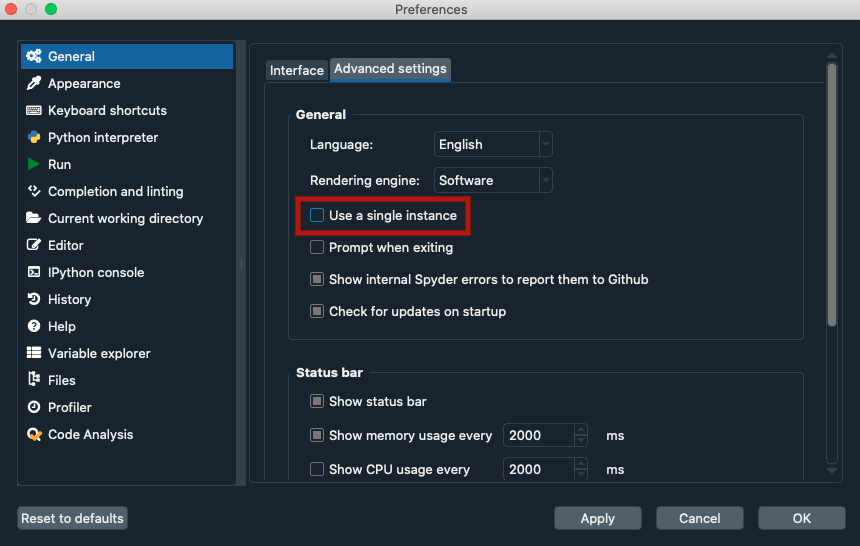

Emergency CPR#
Is Spyder not launching at all? The steps on this section should hopefully get it back up and running in no time.
Common solutions#
Try Basic First Aid first, which usually resolves most Spyder install-related issues.
Make sure Spyder isn’t already running and no Spyder related windows (e.g. Variable Explorer dialogs) are left open, and check that the preference setting isn’t checked.
Try starting Spyder via a different means, such as from a shortcut, Anaconda navigator, or your command line (or Anaconda Prompt on Windows) by simply typing
spyderthen Enter/Return, and see if any of those work. If so, then something’s wrong with your install, not Spyder itself, and so we recommend following Reinstalling Spyder to uninstall and reinstall Anaconda.Disable any security software you may be using, such as a firewall or antivirus, as these products can occasionally interfere with Spyder or its related packages. Make sure to re-enable it if it doesn’t fix the problem, and if it does, add a rule or exception for Spyder or Python.
If it is currently installed “for just you”, try uninstalling and reinstalling Anaconda “for all users” instead, and vice versa, as some systems can have issues with one or the other installation method.
Check and repair/reset permissions, your disk, and OS if all else fails.
Advanced tricks#
If none of the above solves the problem, you can try starting Spyder directly from its Python source files which may either get it running, or at least provide useful information to help debug the issue further.
This technique consists of starting Spyder from your terminal (or Anaconda Prompt on Windows) by manually running the Spyder startup routine ( start.py ) with a known good Python interpreter, and observing the results.
To do so, you’ll need to:
Find the path to the Spyder
appdirectory from the command line. For this, run:python3 -c 'import sysconfig; print(sysconfig.get_paths()["purelib"])'
Go to the output path of the above command on your command line:
cd <OUTPUT-PATH>/spyder/app
Once inside the
appdirectory, runpython start.pyto launch Spyder.
#. If it doesn’t start successfully, then you should see an error traceback printed; carefully copy that for future reference.
Also run python mainwindow.py, and record your results as well.
(Windows only) In case the command window disappears immediately after the error, create a
.batfile in theappdirectory with the following content:<PYTHON-PATH> start.py pauseReplace
<PYTHON-PATH>with the output of:python -c 'import sys; print(sys.executable)'
Then, double click the batch file to run it, and you should see the error information you need.
If reading the output (particularly the last line) doesn’t help you solve the problem, then record all of it carefully, and post it as part of your bug report as described under the Submit a Report section.